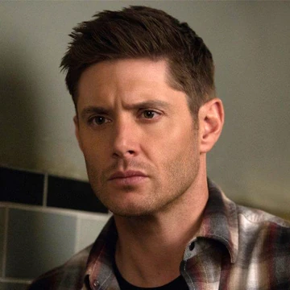
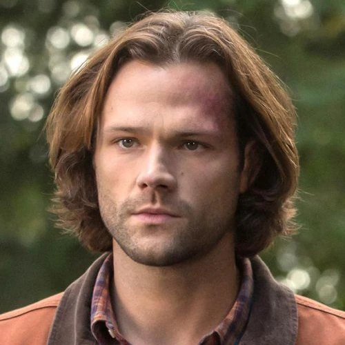
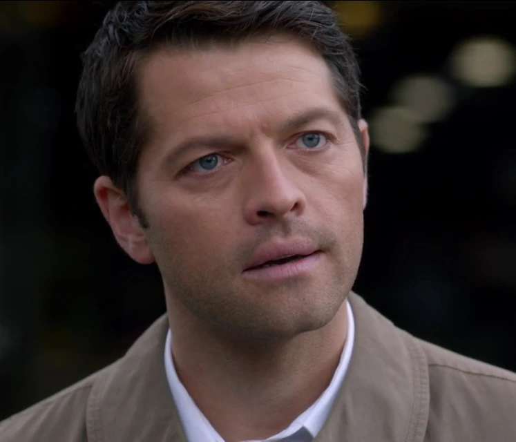
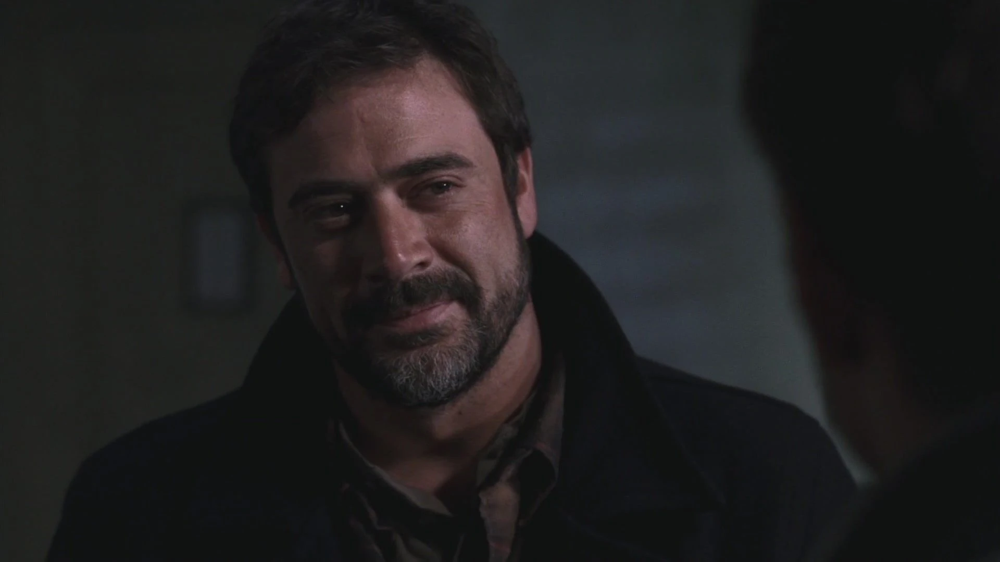
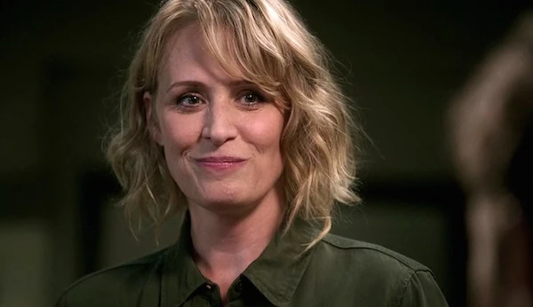
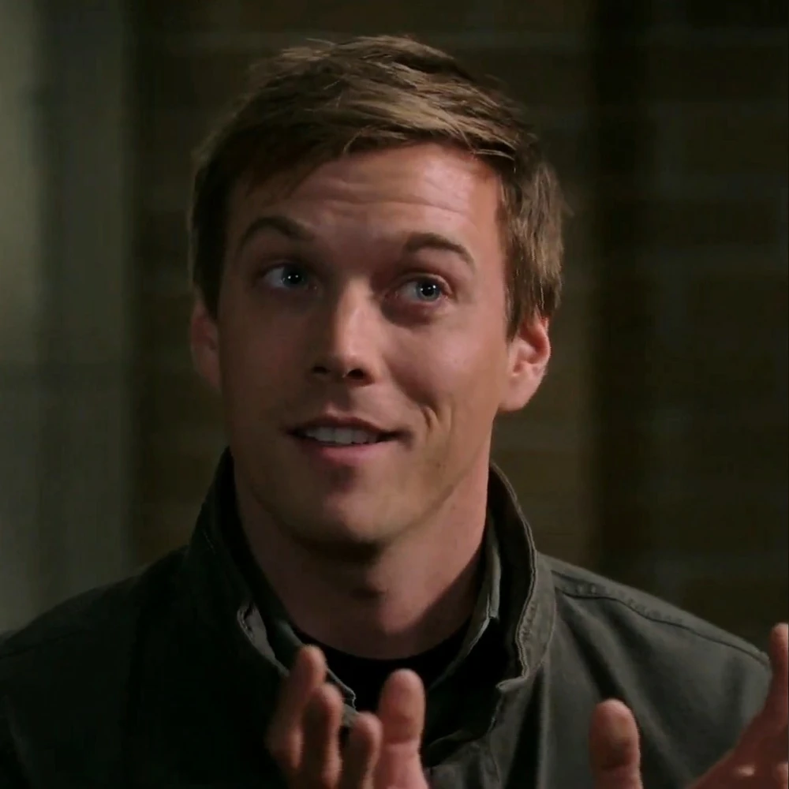

O czym jest serial?
Supernatural to kultowy amerykański serial fantasy, emitowany w latach 2005-2020. Opowiada historię dwóch braci - Sama i Deana Winchesterów - którzy w swojej czarnej Chevrolet Impali z 1967 roku przemierzają wzdłuż i wszerz Stany Zjednoczone w poszukiwaniu sił nieczystych. Polują na demony, duchy, wampiry oraz inne mityczne potwory. Nie raz popadają w tarapaty, ale zawsze wspólnymi siłami dają im radę.
Kluczowe postacie

Dean Winchester

Sam Winchester

Castiel

John Winchester

Mary Winchester

Adam Milligan
Fakty o uniwersum
- 15 sezonów: Serial liczy aż 327 odcinków, co czyni go najdłużej emitowanym amerykańskim serialem fantasy.
- Carry On Wayward Son: Utwór zespołu Kansas stał się nieoficjalnym hymnem serialu, otwierał finał każdego sezonu.
- Kultowa Impala: Na planie serialu wykorzystano łącznie kilkanaście różnych egzemplarzy Chevroleta Impala z 1967 roku.
- Samochód "Baby": Słynny czarny Chevrolet Impala z 1967 roku początkowo miał być... Fordem Mustangiem z 1965 roku. Reżyser Bob Singer zmienił zdanie po rady od sąsiada, który stwierdził, że do polowania na potwory potrzebują auta, w którego bagażniku można zmieścić ciało.
- Bobby Singer miał zniknąć po jednym odcinku: Postać Bobby'ego miała pojawić się tylko w finale 1. sezonu. Aktor tak bardzo przypadł do gustu twórcom i widowni, że stał się jednym z najważniejszych bohaterów serialu.
- Wypadek Jareda Padaleckiego: W 10. sezonie Jared Padalecki (Sam) zwichnął sobie bark podczas zapasów z gościnnie występującym Osricem Chau (Kevin Tran). Scenarzyści musieli wbić ten uraz w fabułę i sprawić, że Sam nosił temblak na początku sezonu.